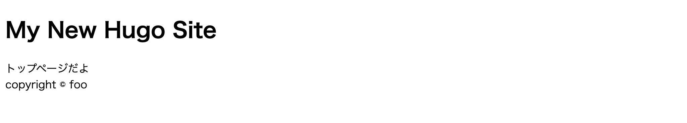
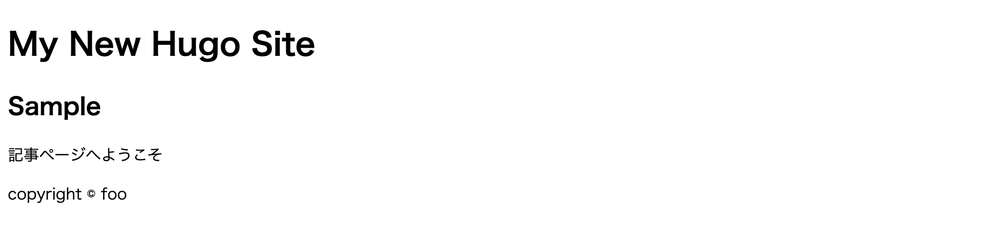

テンプレートを部品化する¶
テンプレートファイルは部品化すると管理しやすくなります。
パーシャルテンプレート¶
概要¶
サイトにおいて、各ページで共通する部品があることがあります。
- ヘッダー
- フッター
- サイドバーのナビゲーション
こういった共通する部品は、部品化しておくとテンプレートの記述をシンプルにできます。 HUGO ではこれらの部品化したテンプレートのことを「パーシャルテンプレート」と呼びます。
部品化してみる¶
たとえば次のような トップページの HTML を作りたいとします。 このヘッダー部分とフッター部分を部品化してみましょう
1 2 3 4 5 6 7 8 9 10 11 12 13 14 | <!DOCTYPE html> <html lang="{{ .Site.LanguageCode }}"> <head> <!-- ここはヘッダー --> <meta charset="UTF-8"> <link rel="stylesheet" href="/css/main.css"> <title>{{ if not .IsHome }}{{ .Title }} | {{ end }}{{ .Site.Title }}</title> </head> <body> <main id="main"> トップページだよ </main> <footer>copyright © {{ .Site.Copyright }}</footer> <!-- ここはフッター --> </body> </html> |
パーシャルテンプレートのファイルは「layouts/partials」以下に配置します。ファイル名は任意でつけることができます。
-
mytheme/layouts/partials/header.htmlを開いて、以下を記述します。1
<h1>{{ .Site.Title }}</h1>
-
mytheme/layouts/partials/footer.htmlを開いて、以下を記述します。1
{{ .Site.Copyright }} -
mytheme/layouts/index.htmlを開いて、以下を記述します。1 2 3 4 5 6 7 8 9 10 11 12 13 14 15 16 17 18 19
<!DOCTYPE html> <html lang="{{ .Site.LanguageCode }}"> <head> <meta charset="UTF-8"> <link rel="stylesheet" href="/css/main.css"> <title>{{ if not .IsHome }}{{ .Title }} | {{ end }}{{ .Site.Title }}</title> </head> <body> <header> {{ partial "header.html" . }} </header> <main id="main"> トップページだよ </main> <footer> {{ partial "footer.html" . }} </footer> </body> </html>
他のテンプレートからパーシャルテンプレートを呼び出す場合は、{{ partial "<PATH>/<FILE_NAME>.html" . }} と記述します。パス名は layouts/partials 以降のパスです。
ベーステンプレート¶
概要¶
さきほど定義した、トップページにあたるindex.html には <html>タグや<head>タグ内のヘッダ情報などが含まれています。
この場合、記事ページにあたるsingle.html や一覧ページのlist.html にも同じように<html>タグなどの記述が必要です。
<html>タグなどはサイトで共通なので、index.html には<main>タグの中身（トップページに書きたいコンテンツ）だけにして、共通部分は別に定義してみましょう。
このとき利用するのが、ベーステンプレートです。ベーステンプレートは /layouts/_default/baseof.html に記述します。
部品化してみる¶
-
mytheme/layouts/index.htmlを開いて、以下のように修正します。1 2 3
{{ define "main" }} トップページだよ {{ end }} -
mytheme/layouts/_default/single.htmlを開いて、以下を記述します。1 2 3 4
{{ define "main" }} <h2>{{ .Title }}</h2> {{ .Content }} {{ end }} -
mytheme/layouts/_default/baseof.htmlを開いて、以下のように修正します。1 2 3 4 5 6 7 8 9 10 11 12 13 14 15 16 17 18 19
<!DOCTYPE html> <html lang="{{ .Site.LanguageCode }}"> <head> <meta charset="UTF-8"> <link rel="stylesheet" href="/css/main.css"> <title>{{ if not .IsHome }}{{ .Title }} | {{ end }}{{ .Site.Title }}</title> </head> <body> <header> {{ partial "header.html" . }} </header> <main id="main"> {{ block "main" . }} {{ end }} </main> <footer> {{ partial "footer.html" . }} </footer> </body> </html>
{{ define "定義名" }} ... {{ end }} で定義した内容を呼び出すには、{{ block "定義名" . }} {{ end }} として記述します。
動作確認¶
動作確認してみましょう。
-
フッター部分で
{{ .Site.Copyright }}とサイト設定の変数を呼び出しているので、config.tomlにcopyrightを追記します。1 2 3 4 5
baseURL = "http://example.org/" languageCode = "en-us" title = "My New Hugo Site" theme = "mytheme" copyright = "copyright © foo"
-
開発サーバを起動します。
1
$ hugo server
-
http://localhost:1313/およびhttp://localhost:1313/sample/にアクセスします。-
http://localhost:1313/ 
-
http://localhost:1313/sample/ 
-